Cabinet Refinishing
Double Vanity Refinishing
White vanity to deep navy
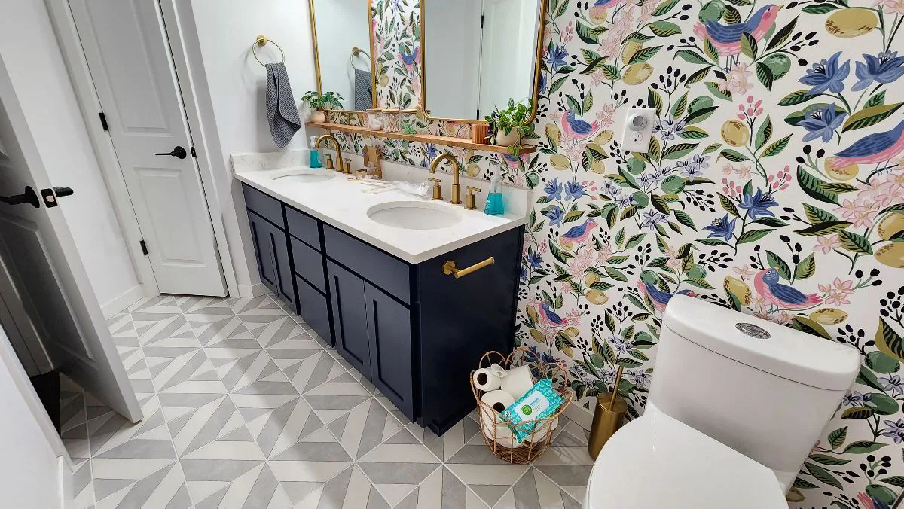
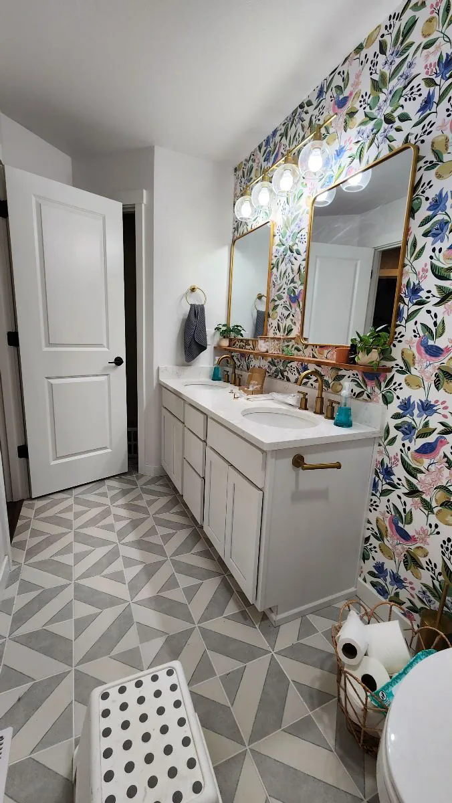
Fine-finish cabinetry
Kitchens, vanities and custom cabinetry documented before and after. Drag every matched pair to compare the original surface with the completed SEACOL finish.
White vanity to deep navy


Warm cabinetry transformed to a bright white fine finish
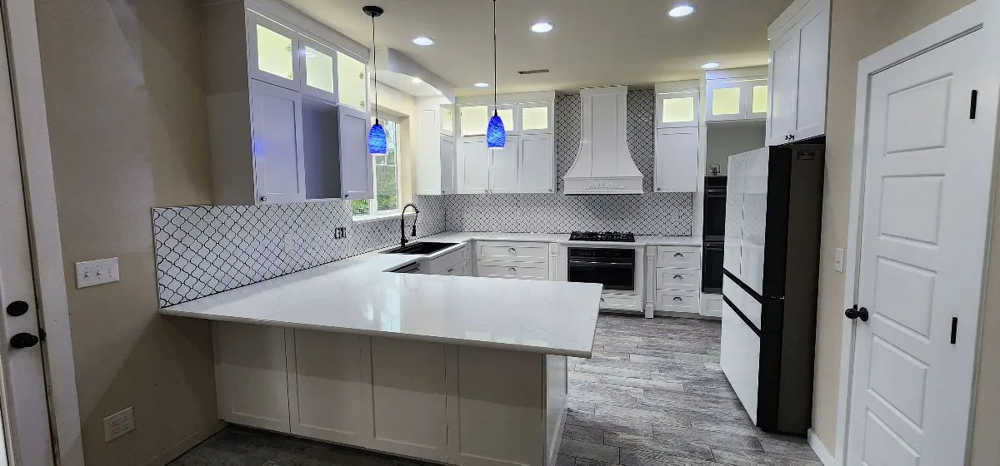
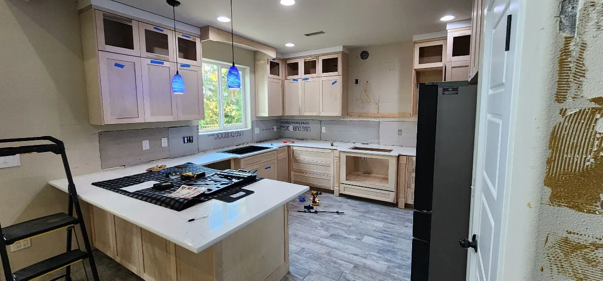
Natural cabinetry refinished in crisp white
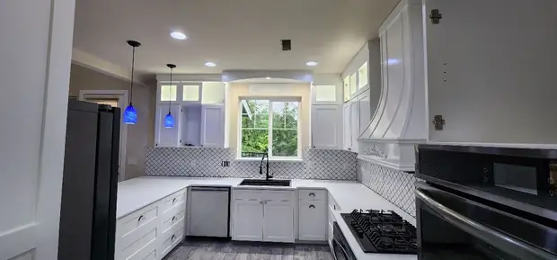
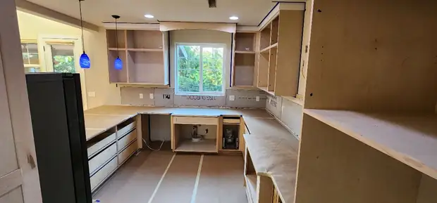
White uppers with a contrasting dark lower cabinet finish
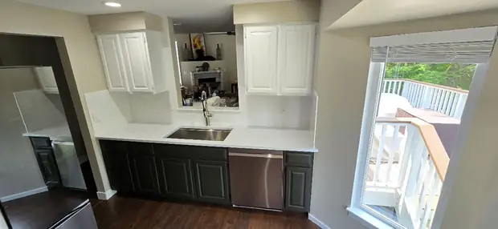
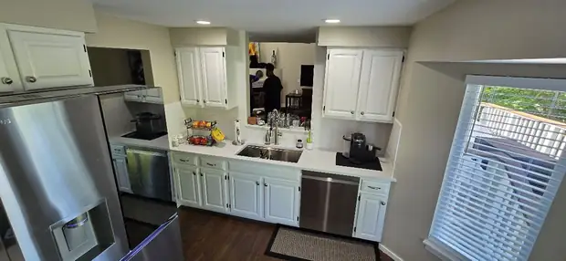
Natural wood cabinetry refinished for a brighter, cleaner appearance
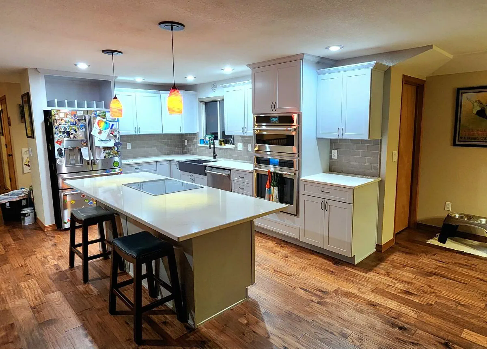
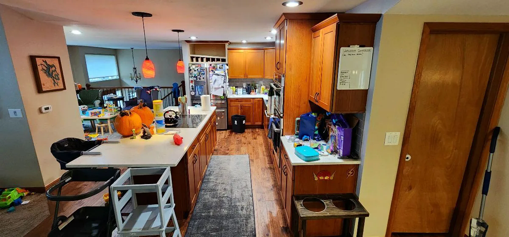
Natural custom cabinetry to finished white
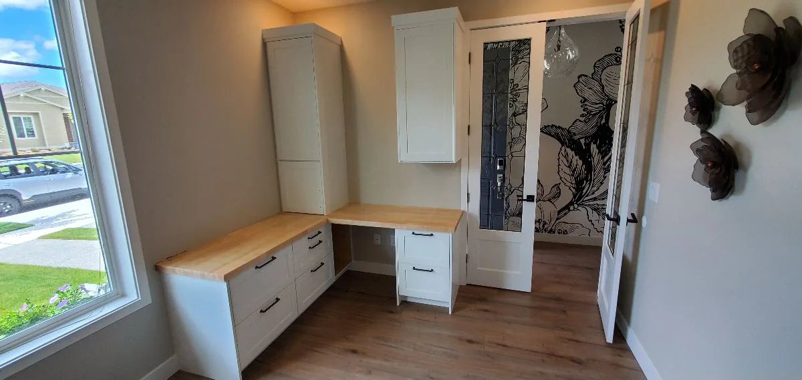
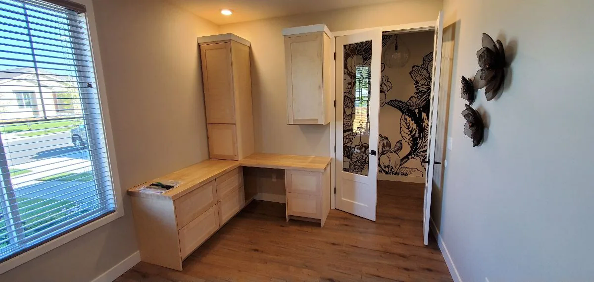
See the preparation behind the finish.
View the process gallery